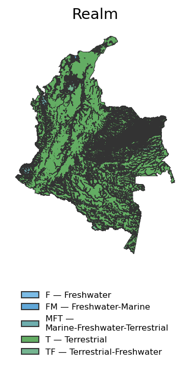
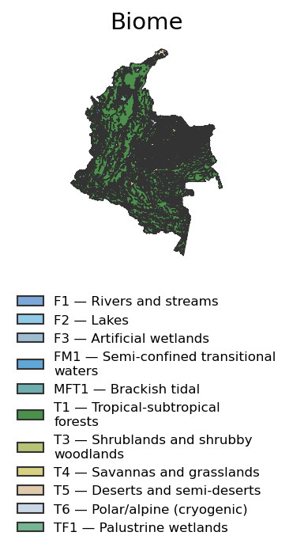
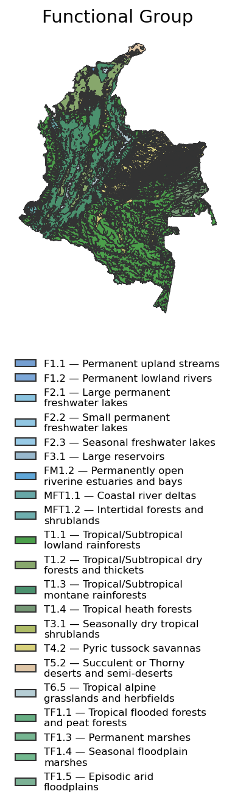

| ECO_CODE | COD | ECO_NAME | Glob_Typol |
|---|---|---|---|
| REALM: Terrestre (T) | |||
| Bioma de bosques tropicales y subtropicales (T1) | |||
| Bosques lluviosos tropicales y subtropicales de tierras bajas (T1.1) | |||
| T1.1.1 | B1b | Apure-Villavicencio dry forests | T1.1_Apure_Vill f_B1b |
| T1.1.2 | B1a | Caqueta moist forests | T1.1_Caq mf_B1a |
| T1.1.3 | B2a1 | Caqueta moist forests | T1.1_Caq mf_B2a1 |
| T1.1.4 | B3a1 | Caqueta moist forests | T1.1_Caq mf_B3a1 |
| T1.1.5 | B1d | Catatumbo moist forests | T1.1_Catatum mf_B1d |
| T1.1.6 | B2d | Catatumbo moist forests | T1.1_Catatum mf_B2d |
| T1.1.7 | B2c | Chocó-Darién moist forests | T1.1_ChoDar_mf_B2c |
| T1.1.8 | B3c | Chocó-Darién moist forests | T1.1_ChoDar_mf_B3c |
| T1.1.9 | B7 | Chocó-Darién moist forests | T1.1_ChoDar_mf_B7 |
| T1.1.10 | B4a | Guaianan piedmont forestsi | T1.1_GuaiPiedm f_B4a |
| T1.1.11 | B6 | Guaianan piedmont forestsi | T1.1_GuaiPiedm f_B6 |
| T1.1.12 | B4b | Japurá-Solimões-Negro moist forests | T1.1_Jap-So-Ne mf_B4b |
| T1.1.13 | B4c | Japurá-Solimões-Negro moist forests | T1.1_Jap-So-Ne mf_B4c |
| T1.1.14 | B4d | Japurá-Solimões-Negro moist forests | T1.1_Jap-So-Ne mf_B4d |
| T1.1.15 | B5 | Llanos | T1.1_Llanos_B5 |
| T1.1.16 | B1c | Magdalena-Urabá moist forests | T1.1_Mag-Urab mf_B1c |
| T1.1.17 | B2b | Magdalena-Urabá moist forests | T1.1_Mag-Urab mf_B2b |
| T1.1.18 | B8 | Magdalena-Urabá moist forests | T1.1_Mag-Urab mf_B8 |
| T1.1.19 | B9 | Magdalena-Urabá moist forests | T1.1_Mag-Urab mf_B9 |
| T1.1.20 | B1a | Napo moist forests | T1.1_Napo mf_B1a |
| T1.1.21 | B2a1 | Napo moist forests | T1.1_Napo mf_B2a1 |
| T1.1.22 | B3a1 | Napo moist forests | T1.1_Napo mf_B3a1 |
| T1.1.23 | B1a | Solimões-Japurá moist forests | T1.1_SolJapura mf_B1a |
| T1.1.24 | B2a2 | Solimões-Japurá moist forests | T1.1_SolJapura mf_B2a2 |
| T1.1.25 | B3a2 | Solimões-Japurá moist forests | T1.1_SolJapura mf_B3a2 |
| T1.1.26 | B2c | Western Ecuador moist forests | T1.1_WEcua mf_B2c |
| T1.1.27 | B3c | Western Ecuador moist forests | T1.1_WEcua mf_B3c |
| Bosques y matorrales secos tropicales/subtropicales (T1.2) | |||
| T1.2.1 | B10 | Catatumbo Ocaña dry forests | T1.2_CatOcañ df_B10 |
| T1.2.2 | B12 | Catatumbo Ocaña dry forests | T1.2_CatOcañ df_B12 |
| T1.2.3 | B23 | Catatumbo Ocaña dry forests | T1.2_CatOcañ df_B23 |
| T1.2.4 | B10 | Cauca Valley dry forests | T1.2_Cauca Val df_B10 |
| T1.2.5 | B11 | Cauca Valley dry forests | T1.2_Cauca Val df_B11 |
| T1.2.6 | B12 | Cauca Valley dry forests | T1.2_Cauca Val df_B12 |
| T1.2.7 | B23 | Cauca Valley dry forests | T1.2_Cauca Val df_B23 |
| T1.2.8 | A5 | Chicamocha Valley dry forests | T1.2_ChV df_A5 |
| T1.2.9 | B23 | Chicamocha Valley dry forests | T1.2_ChV df_B23 |
| T1.2.10 | B23 | Cordillera Oriental montane forests | T1.2_CordOri mf_B23 |
| T1.2.11 | B10 | Guajira-Barranquilla xeric scrub | T1.2_Guaj-Barr xs_B10 |
| T1.2.12 | B11 | Guajira-Barranquilla xeric scrub | T1.2_Guaj-Barr xs_B11 |
| T1.2.13 | B12 | Guajira-Barranquilla xeric scrub | T1.2_Guaj-Barr xs_B12 |
| T1.2.14 | B13 | Guajira-Barranquilla xeric scrub | T1.2_Guaj-Barr xs_B13 |
| T1.2.15 | B10 | Magdalena Valley dry forests | T1.2_Magd Val df_B10 |
| T1.2.16 | B11 | Magdalena Valley dry forests | T1.2_Magd Val df_B11 |
| T1.2.17 | B12 | Magdalena Valley dry forests | T1.2_Magd Val df_B12 |
| T1.2.18 | B23 | Magdalena Valley dry forests | T1.2_Magd Val df_B23 |
| T1.2.19 | A5 | Patìa-Dagua dry forests | T1.2_Pat Dag df_A5 |
| T1.2.20 | B10 | Patìa-Dagua dry forests | T1.2_Pat Dag df_B10 |
| T1.2.21 | B11 | Patìa-Dagua dry forests | T1.2_Pat Dag df_B11 |
| T1.2.22 | B12 | Patìa-Dagua dry forests | T1.2_Pat Dag df_B12 |
| T1.2.23 | B23 | Patìa-Dagua dry forests | T1.2_Pat Dag df_B23 |
| T1.2.24 | B10 | Sinú Valley dry forests | T1.2_Sinú Valley df_B10 |
| T1.2.25 | B11 | Sinú Valley dry forests | T1.2_Sinú Valley df_B11 |
| T1.2.26 | B12 | Sinú Valley dry forests | T1.2_Sinú Valley df_B12 |
| T1.2.27 | B23 | Sinú Valley dry forests | T1.2_Sinú Valley df_B23 |
| T1.2.28 | A6 | Magdalena Valley montane forests | T1.2a_Magd Val mf_A6 |
| Bosques lluviosos montanos tropicales/subtropicales (T1.3) | |||
| T1.3.1 | B19b | Catatumbo moist forests | T1.3_Catatum mf_B19b |
| T1.3.2 | B20b | Catatumbo moist forests | T1.3_Catatum mf_B20b |
| T1.3.3 | B19a | Cauca Valley montane forests | T1.3_Cauca V mf_B19a |
| T1.3.4 | B20a | Cauca Valley montane forests | T1.3_Cauca V mf_B20a |
| T1.3.5 | B20b | Cauca Valley montane forests | T1.3_Cauca V mf_B20b |
| T1.3.6 | B21a | Cauca Valley montane forests | T1.3_Cauca V mf_B21a |
| T1.3.7 | B21b | Cauca Valley montane forests | T1.3_Cauca V mf_B21b |
| T1.3.8 | B21d | Cauca Valley montane forests | T1.3_Cauca V mf_B21d |
| T1.3.9 | B19a | Cordillera Oriental montane forests | T1.3_CordOri mf_B19a |
| T1.3.10 | B19b | Cordillera Oriental montane forests | T1.3_CordOri mf_B19b |
| T1.3.11 | B20a | Cordillera Oriental montane forests | T1.3_CordOri mf_B20a |
| T1.3.12 | B20b | Cordillera Oriental montane forests | T1.3_CordOri mf_B20b |
| T1.3.13 | B21a | Cordillera Oriental montane forests | T1.3_CordOri mf_B21a |
| T1.3.14 | B21b | Cordillera Oriental montane forests | T1.3_CordOri mf_B21b |
| T1.3.15 | B21c | Cordillera Oriental montane forests | T1.3_CordOri mf_B21c |
| T1.3.16 | B21d | Cordillera Oriental montane forests | T1.3_CordOri mf_B21d |
| T1.3.17 | B19a | Eastern Cordillera Real montane forests | T1.3_EastCR mf_B19a |
| T1.3.18 | B20a | Eastern Cordillera Real montane forests | T1.3_EastCR mf_B20a |
| T1.3.19 | B21a | Eastern Cordillera Real montane forests | T1.3_EastCR mf_B21a |
| T1.3.20 | B21b | Eastern Cordillera Real montane forests | T1.3_EastCR mf_B21b |
| T1.3.21 | B22 | Eastern Cordillera Real montane forests | T1.3_EastCR mf_B22 |
| T1.3.22 | B16 | Macarena montane forests | T1.3_Macarena mf_B16 |
| T1.3.23 | B17 | Macarena montane forests | T1.3_Macarena mf_B17 |
| T1.3.24 | B18 | Macarena montane forests | T1.3_Macarena mf_B18 |
| T1.3.25 | B19a | Magdalena Valley montane forests | T1.3_Magd Val mf_B19a |
| T1.3.26 | B19b | Magdalena Valley montane forests | T1.3_Magd Val mf_B19b |
| T1.3.27 | B20a | Magdalena Valley montane forests | T1.3_Magd Val mf_B20a |
| T1.3.28 | B20b | Magdalena Valley montane forests | T1.3_Magd Val mf_B20b |
| T1.3.29 | B21a | Magdalena Valley montane forests | T1.3_Magd Val mf_B21a |
| T1.3.30 | B21b | Magdalena Valley montane forests | T1.3_Magd Val mf_B21b |
| T1.3.31 | B21c | Magdalena Valley montane forests | T1.3_Magd Val mf_B21c |
| T1.3.32 | B21d | Magdalena Valley montane forests | T1.3_Magd Val mf_B21d |
| T1.3.33 | B22 | Magdalena Valley montane forests | T1.3_Magd Val mf_B22 |
| T1.3.34 | B19a | Northwest Andean montane forests | T1.3_NW And mf_B19a |
| T1.3.35 | B19b | Northwest Andean montane forests | T1.3_NW And mf_B19b |
| T1.3.36 | B20a | Northwest Andean montane forests | T1.3_NW And mf_B20a |
| T1.3.37 | B20b | Northwest Andean montane forests | T1.3_NW And mf_B20b |
| T1.3.38 | B21a | Northwest Andean montane forests | T1.3_NW And mf_B21a |
| T1.3.39 | B21b | Northwest Andean montane forests | T1.3_NW And mf_B21b |
| T1.3.40 | B21c | Northwest Andean montane forests | T1.3_NW And mf_B21c |
| T1.3.41 | B21d | Northwest Andean montane forests | T1.3_NW And mf_B21d |
| T1.3.42 | B19b | Santa Marta montane forests | T1.3_S Mart mf_B19b |
| T1.3.43 | B20b | Santa Marta montane forests | T1.3_S Mart mf_B20b |
| T1.3.44 | B21b | Santa Marta montane forests | T1.3_S Mart mf_B21b |
| Bosques tropicales esclerofilos sobre arenas blancas (T1.4) | |||
| T1.4.1 | B14 | Japurá-Solimões-Negro moist forests | T1.4_Jap-So-Ne mf_B14 |
| T1.4.2 | B15 | Negro-Branco moist forests | T1.4_Neg Branc mf_B15 |
| T1.4.3 | S1 | Rio Negro Campinas | T1.4a_Negro camp_S1 |
| Bioma de arbustales y matorrales (T3) | |||
| Matorrales tropicales estacionalmente secos (T3.1) | |||
| T3.1.1 | A4 | Pantepui | T3.1_Pantepui_A4 |
| T3.1.2 | S2 | Pantepui | T3.1_Pantepui_S2 |
| Bioma de sabanas y pastizales (T4) | |||
| Sabanas de pastos piricos (T4.2) | |||
| T4.2.1 | S16 | Chicamocha Valley dry forests | T4.2_ChV df_S16 |
| T4.2.2 | S5 | Llanos | T4.2_LLanos_S5 |
| T4.2.3 | S3 | Llanos | T4.2_Llanos_S3 |
| T4.2.4 | S4 | Llanos | T4.2_Llanos_S4 |
| T4.2.5 | S5 | Llanos | T4.2_Llanos_S5 |
| T4.2.6 | S6 | Llanos | T4.2_Llanos_S6 |
| T4.2.7 | S7 | Llanos | T4.2_Llanos_S7 |
| T4.2.8 | S8 | Llanos | T4.2_Llanos_S8 |
| T4.2.9 | S11 | Magdalena-Urabá moist forests | T4.2_Mag-Urab mf_S11 |
| T4.2.10 | S10 | Llanos | T4.2a_Llanos_S10 |
| T4.2.11 | S9 | Llanos | T4.2a_Llanos_S9 |
| T4.2.12 | S12 | Sinú Valley dry forests | T4.2b_Sinú Valley df_S12 |
| Bioma de desiertos y semidesiertos (T5) | |||
| Desiertos y semidesiertos suculentos o espinosos (T5.2) | |||
| T5.2.1 | A1 | Guajira-Barranquilla xeric scrub | T5.2_Guaj-Barr xs_A1 |
| T5.2.2 | A3 | Guajira-Barranquilla xeric scrub | T5.2_Guaj-Barr xs_A3 |
| T5.2.3 | A2 | Magdalena Valley dry forests | T5.2_Magd Val df_A2 |
| Bioma polar/alpino (criogenico) (T6) | |||
| Pastizales y herbazales de altas montanas tropicales (T6.5) | |||
| T6.5.1 | N | Northern Andean Paramo | T6.5_N And par_N |
| T6.5.2 | S13 | Northern Andean Paramo | T6.5_N And par_S13 |
| T6.5.3 | S14 | Northern Andean Paramo | T6.5_N And par_S14 |
| T6.5.4 | S15 | Northern Andean Paramo | T6.5_N And par_S15 |
| T6.5.5 | N | Santa Marta Paramo | T6.5_SM Paramo_N |
| T6.5.6 | S14 | Santa Marta Paramo | T6.5_SM Paramo_S14 |
| REALM: Agua dulce (F) | |||
| Bioma de rios y arroyos (F1) | |||
| Rios permanentes de tierras altas (F1.1) | |||
| F1.1.1 | Agua | Catatumbo moist forests | F1.1_Catatum mf_Agua |
| F1.1.2 | Agua | Cauca Valley montane forests | F1.1_Cauca V mf_Agua |
| F1.1.3 | Agua | INDEF | F1.1_Indef_Agua |
| F1.1.4 | Agua | Magdalena-Urabá moist forests | F1.1_Mag-Urab mf_Agua |
| F1.1.5 | Agua | Magdalena Valley montane forests | F1.1_Magd Val mf_Agua |
| F1.1.6 | Agua | Northwest Andean montane forests | F1.1_NW And mf_Agua |
| Rios permanentes de tierras bajas (F1.2) | |||
| F1.2.1 | Agua | INDEF | F1.2_Indef_Agua |
| F1.2.2 | Agua | INDEF | F1.2a_Indef_Agua |
| Bioma de lagos (F2) | |||
| Grandes lagos de agua dulce permanentes (F2.1) | |||
| F2.1.1 | Agua | INDEF | F2.1_Indef_Agua |
| Pequenos lagos de agua dulce permanentes (F2.2) | |||
| F2.2.1 | Agua | INDEF | F2.2_Indef_Agua |
| Lagos de agua dulce estacionales (F2.3) | |||
| F2.3.1 | Agua | INDEF | F2.3_Indef_Agua |
| Bioma de humedales artificiales (F3) | |||
| Grandes embalses (F3.1) | |||
| F3.1.1 | Agua | INDEF | F3.1_Indef_Agua |
| REALM: Agua dulce-Marina (FM) | |||
| Bioma de aguas de transicion semiconfinadas (FM1) | |||
| Estuarios fluviales y bahias permanentemente conectados (FM1.2) | |||
| FM1.2.1 | Agua | INDEF | FM1.2_Indef_Agua |
| REALM: Marina-Agua dulce-Terrestre (MFT) | |||
| Bioma de mareas salobres (MFT1) | |||
| Deltas fluviales costeros (MFT1.1) | |||
| MFT1.1.1 | B31 | Chocó-Darién moist forests | MFT1.1_ChoDar_mf_B31 |
| MFT1.1.2 | B32 | Chocó-Darién moist forests | MFT1.1_ChoDar_mf_B32 |
| MFT1.1.3 | B32 | Western Ecuador moist forests | MFT1.1_WEcua mf_B32 |
| Bosques y matorrales intermareales (MFT1.2) | |||
| MFT1.2.1 | B36 | Amazon-Orinoco-Southern Caribbean mangroves | MFT1.2_AmOriSCar_mg_B36 |
| MFT1.2.2 | B35 | South American Pacific mangroves | MFT1.2_SAmPacif mg_B35 |
| REALM: Terrestre-Agua dulce (TF) | |||
| Bioma de humedales palustres (TF1) | |||
| Bosques tropicales inundados y bosques de turba (TF1.1) | |||
| TF1.1.1 | B27 | Amazon-Orinoco Alluvial forests | TF1.1_Am-Ori alvf_B27 |
| TF1.1.2 | B28 | Amazon-Orinoco Alluvial forests | TF1.1_Am-Ori alvf_B28 |
| TF1.1.3 | B29 | Amazon-Orinoco Alluvial forests | TF1.1_Am-Ori alvf_B29 |
| TF1.1.4 | B30 | Amazon-Orinoco Alluvial forests | TF1.1_Am-Ori alvf_B30 |
| TF1.1.5 | B24 | Andean Alluvial forests | TF1.1_And alvf_B24 |
| TF1.1.6 | B25 | Andean Alluvial forests | TF1.1_And alvf_B25 |
| TF1.1.7 | B33 | Andean Alluvial forests | TF1.1_And alvf_B33 |
| TF1.1.8 | B24 | Andean Pacific Alluvial forests | TF1.1_AndPac alvf_B24 |
| TF1.1.9 | B26 | Andean Pacific Alluvial forests | TF1.1_AndPac alvf_B26 |
| Pantanos permanentes (TF1.3) | |||
| TF1.3.1 | P1 | Eastern Cordillera Real montane forests | TF1.3_EastCR mf_P1 |
| TF1.3.2 | P1 | Magdalena Valley montane forests | TF1.3_Magd Val mf_P1 |
| TF1.3.3 | P1 | Northwest Andean montane forests | TF1.3_NW And mf_P1 |
| Cienagas estacionales de llanuras de inundacion (TF1.4) | |||
| TF1.4.1 | P4 | Chocó-Darién moist forests | TF1.4_ChoDar_mf_P4 |
| TF1.4.2 | P2 | Sinu-Magdalena wetlands | TF1.4_Sin-Mag w_P2 |
| TF1.4.3 | P3 | Sinu-Magdalena wetlands | TF1.4_Sin-Mag w_P3 |
| Llanuras de inundacion aridas episodicas (TF1.5) | |||
| TF1.5.1 | B34 | Guajira-Barranquilla xeric scrub | TF1.5_Guaj-Barr xs_B34 |
| TF1.5.2 | B34 | Magdalena Valley dry forests | TF1.5_Magd Val df_B34 |
| TF1.5.3 | B34 | Sinú Valley dry forests | TF1.5_Sinú Valley df_B34 |
Terrestrial Ecosystems of Ruritania
The Ruritania ecosystem typology includes 161 ecosystem types across 21 biomes (Table tbl-typology). The ecosystem typology is consistent with the IUCN global ecosystem typology (Keith et al. 2020) to support crosswalks and comparisons with Red Lists of ecosystems in other countries and regions. The Ruritania ecosystem typology has a hierarchical structure, where each ecosystem type is assigned to a realm, biome and functional group (ecotype). Realm refers to one of the four component media in the biosphere (Figure fig-realm-distribution), biome is the segment of the biosphere united by major functional traits and macro-environmental features (Figure fig-biome-distribution), and functional group is a group of related ecosystems within a biome (Figure fig-functional-group-distribution). The distribution of Ruritania’s ecosystem types is shown in Figure fig-heat-map-ecosystems, and map data is made publicly available (reference?).


/home/bianca_ortiz/rle-ruritania-thomas/.pixi/envs/default/lib/python3.11/site-packages/iucn_get_data/ecosystem_map.py:435: UserWarning: Tight layout not applied. The bottom and top margins cannot be made large enough to accommodate all Axes decorations.
fig.tight_layout(rect=(0, 0.18, 1, 1))
(Heat map of the distribution of natural ecosystem types not implemented yet.)
ImportantHow to customize the Ecosystem Overview page
- To modify the ecosystem overview text, edit the
content/2_ecosystem_overview.qmdfile. - To remove the ecosystem overview section, edit the
_quarto.ymlfile and remove the- content/2_ecosystem_overview.qmdline.
To hide these instructions on all pages, set show-instructions: false in the _quarto.yml file.
Keith, David A, José R Ferrer-Paris, Emily Nicholson, and Richard Kingsford. 2020. IUCN Global Ecosystem Typology 2.0: Descriptive Profiles for Biomes and Ecosystem Functional Groups. Gland, Switzerland: IUCN. https://doi.org/10.2305/IUCN.CH.2020.13.en.